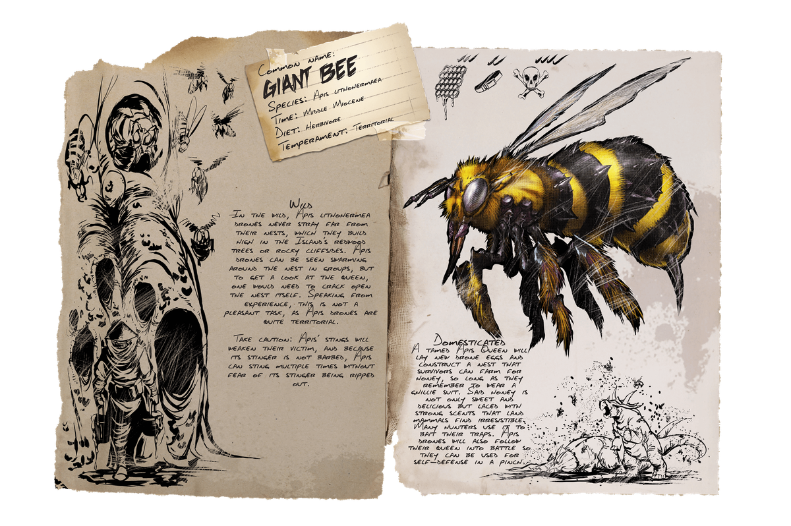

Primera aparición: Temporada 6 - prólogo
Tamaño (adulto): Envergadura - 2 metros, Altura: 1 metros
Hábitat: LA ISLA, EL CENTRO, SCORCHED, VALGUERO, RAGNAROK, FJOLDUR, TIERRA, GENESIS
Dieta: Carnívora
Comportamiento: Defensivo
Nivel de amenaza: Bajo y alta en manada, evitar si es posible
Nivel de pelea: 600